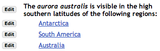
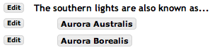

Introducción a la herramienta Contenidos
Complete el contenido de esta página usando los menús de la parte superior. Los más habituales son:
- Añadir texto - introducir texto en un editor
- Añadir recurso - subir un documento o añadir una URL
- Añadir contenido multimedia - añadir un elemento multimedia que se mostrará en la página; p.e. una presentación Flash o un vídeo
Le sugerimos que comience haciendo clic sobre Añadir texto. Puede también añadir enlaces a Recursos, Tareas, Exámenes e hilos de discusión en Foros. Seleccione Añadir contenido multimedia para incluir una presentación Flash, un vídeo, un enlace a un vídeo de YouTube, etc.
Si sitúa el ratón sobre una opción de menú, verá una breve descripción de lo que hace dicha opción.
Una vez haya añadido contenido, encontrará un botón Editar junto a cada elemento con el que podrá ajustar el tamaño de los contenidos multimedia, cambiar el título, añadir un texto descriptivo, etc. Edite los elementos para librerar actividades e información de forma secuencial.
Otras cosas que puede añadir a su página
- Añadir página web - Subir un sitio web empaquetado en formato ZIP. Hay soporte específico para Camtasia, Wimba Create y Articulate, pero se puede cargar cualquier archivo ZIP que contenga recursos.
- Añadir subpágina - Crear otra página con contenidos y enlazarla a esta.
- Añadir tarea - Elegir una tarea de la herramienta Tareas y añadirla a esta página.
- Añadir examen - Elegir un examen de la herramienta Exámenes y añadirlo a la página.
- Añadir un tema de foro - Elegir un hilo de discusión de la herramienta Foros y añadirlo a la página.
- Añadir herramienta externa - Será avisado si es necesario que utilice esta herramienta.
- Añadir herramienta de comentarios - Permite a los alumnos introducir comentarios.
- Añadir contenido del alumno - Permite a los alumnos crear una página con sus propios contenidos. Otros alumnos pueden hacer comentarios en dicha página.
La opción "Configuración" gestiona características adicionales que se aplican a toda la página. El botón "Editar" que aparece al lado de cada elemento es de aplicación únicamente a dicho elemento.
Más información
- Contenido multimedia - Instrucciones y consejos técnicos que entran en mayor profundidad para diferentes navegadores.
- Accesibilidad web - Cómo crear contenidos accesibles usando la herramienta Diseño de Unidades.
- Secuenciación de unidades - Exigir la finalización de una o varias tareas antes de que otras sean mostradas a los alumnos.
Tareas habituales
Existen diversas formas de estructurar los contenidos con la herramienta Diseño de unidades. Las dos más habituales son:
- Organizar el material por tema o unidad - Para los temas principales, que posiblemente quiera que aparezcan en el margen izquierdo, vaya a Panel de Control y añada una nueva instancia de la herramienta Diseño de unidades usando Editar herramientas. Se le solicitará que indique un título para la nueva unidad. Puede cambiarlo más tarde con la opción "Configuración".
- Organizar el material dentro de un tema - Vea el Ejemplo 2 en el margen derecho. Se crearon tres páginas para albergar la información relativa a tres secciones específicas de la unidad, enlazadas desde la misma página principal. Para crear una página de este tipo, use la opción Añadir subpágina que tiene disponible en la parte superior de la página.
Observe que Añadir subpágina le lleva a la nueva página recién creada, de forma que pueda comenzar a añadir contenido. Puede volver a la página principal usando los enlaces de navegación que aparecen en la parte superior de la página.
Tareas avanzadas
En la mayoría de los casos los dos métodos habituales le resultarán suficientes. Aun así, es posible usar esta herramienta para construir estructuras de páginas más complejas. Aquí se describen un par de ideas para hacer esto:
- Construir una secuencia de páginas - Algunas veces querrá que sus alumnos accedan a una serie de páginas. En general, recomendamos crear las páginas como subpáginas de la página principal, como hemos visto en el Ejemplo 2. De esa forma a los alumnos les resultará fácil revisar todo el material. Pero si quiere dirigir a sus alumnos a recorrer los contenidos en un orden determinado, puede añadir un enlace a la siguiente página. De esa forma construirá una secuencia de páginas.
Para añadir la siguiente página, use Añadir subpágina, pero elija la opción "Incluir en secuencia de páginas". Puede también querer marcar la opción "Mostrar como un botón".
Al seleccionar "Incluir en secuencia de páginas" la herramienta le llevará directamente a esa página (aunque el alumno siempre podrá acceder directamente a cualquiera de las páginas usando el índice de páginas, excepto a las páginas a las que haya podido restringir el acceso).
Al seleccionar "Mostrar como un botón" la subpágina se muestra como un botón, en lugar de como un enlace, dentro de la página principal.
- Ir a diferentes páginas a elección del alumno - Vea el Ejemplo 3 en el margen derecho. Puede querer plantear una pregunta a sus alumnos y dirigirles a una página diferente según cual sea su respuesta. Para hacer eso, plantee la pregunta usando la opción Añadir texto, y a continuación inserte subpáginas bajo ella, que les remitirá a diferentes páginas. Para hacer eso utilice la opción Añadir subpágina tantas veces como posibles opciones de respuesta dé.
Las subpáginas podrá crearlas con las opciones que quiera, en forma o no de botón, y en secuencia o no. En el Ejemplo 3 hemos seleccionado ambas opciones.

Ejemplo 1. Página sencilla con bloques Añadir texto, Añadir examen, Añadir tarea y Añadir un tema de foro. La imagen ha sido añadida insertándola con el editor de texto en el bloque Añadir texto.

Ejemplo 2. Ejemplo de una unidad con varias secciones: un pequeño bloque de texto y tres subpáginas, una por cada sección. Pulse en cada subpágina para añdir el contenido de cada sección.

Ejemplo 3. Ir a una página diferente dependiendo de la respuesta a una pregunta. Las dos respuestas se indican mediante el uso de Añadir subpágina. En este caso se crearon seleccionando "Incluir en secuencia de páginas" y "Mostrar como un botón". Observe que Añadir subpágina le permite crear una nueva página o enlazar a otra ya existente.